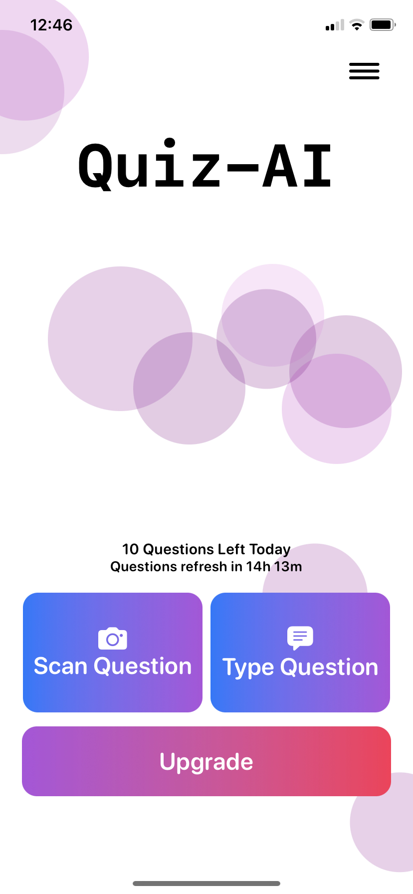

Transform the way you learn!
Scan Your Question
Use our built-in camera feature to snap a pic of your question. Our AI will do the rest.

Verify the Extracted Text
Ensure the extracted text matches your question. Edit if needed.
Get the Answer Instantly
Our AI analyzes the question and provides you with the best possible answer.